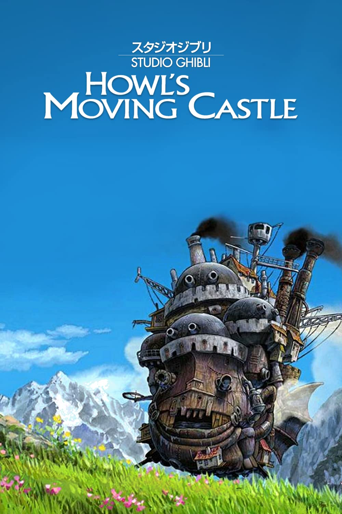
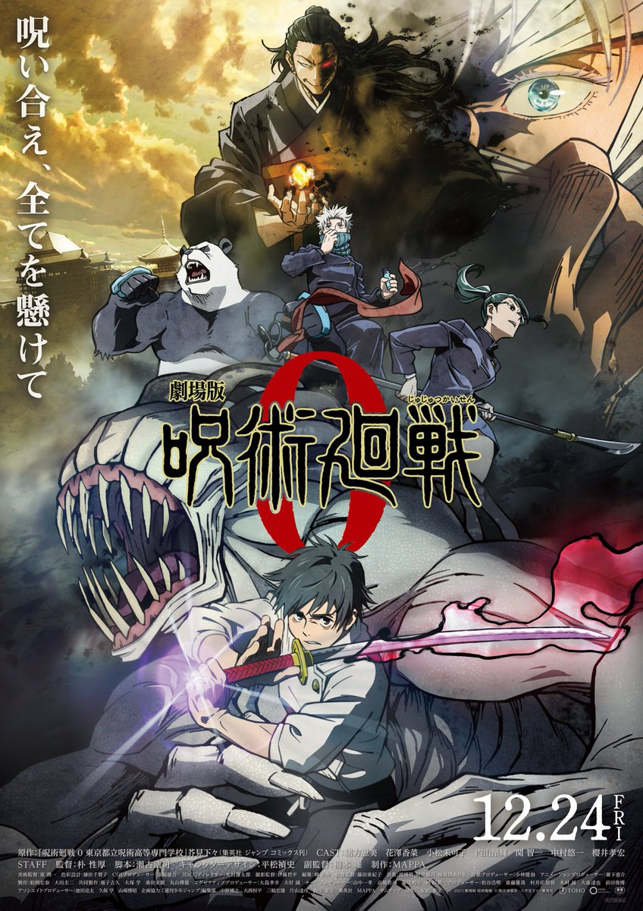

O Castelo Animado (Howl's Moving Castle)
Uma bruxa lança uma terrível maldição sobre a jovem Sophie, transformando-a numa velha de 90 anos. Desesperada, ela embarca numa odisseia na qual acaba parando no castelo animado, onde reside um misterioso feiticeiro chamado Howl que poderá ajudá-la a reverter o feitiço.
O Castelo Animado é uma animação japonesa do diretor Hayao Miyazaki, produzida pelo
Studio Ghibli em 2004. A história é baseada
no livro de mesmo nome da escritora inglesa Diana Wynne Jones.
O Castelo Animado foi indicado ao Oscar de Melhor Animação, contudo, não levou o prêmio.
No Brasil o filme foi lançado em DVD pela Playarte em versão dublada e legendada. Atualmente está disponível junto a mais
outros 20 filmes do Studio Ghibli na plataforma de streaming da Netflix.
Jujutsu Kaisen 0 (じゅじゅつかいせん/ 呪術廻戦 )
Dificuldade, arrependimento, vergonha: os sentimentos negativos que os humanos sentem tornam-se maldições que espreitam em nossas vidas cotidianas. Maldições correm soltas em todo o mundo, capazes de levar as pessoas ao terrível infortúnio e até à morte. Geralmente, as maldições não se comunicam, mas algumas aprenderam a se comunicar e também começaram a criar planos contra os humanos.
Jujutsu Kaisen é um anime que adapta o mangá criado (escrito e ilustrado) por Gege Akutami .O anime
é produzido pelo estúdio MAPPA sob a direção de Sunghoo Park,a série animada foi lançada em outubro de 2020.
Mesmo contando
apenas com uma temporada lançada até o momento, o sucesso é inegável e isso alavancou as
vendas do mangá, que já possui mais de 45 milhões de cópias em circulação..